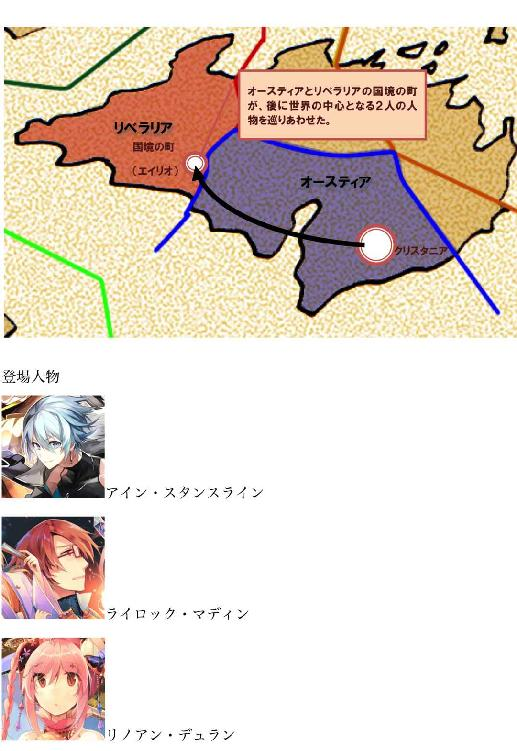

| 境界を超えろ！: 意志の力が 99.995%の問題を解決する LinkAuter Chronicle Xceed | |
| 杞優橙佳 | |
| (2018) | |
『心の中に未来にふさわしいビジョンを描け。
そして、自分を過去の末裔であるという
迷信を忘れるんだ。
あの未来の生を思い巡らせば、
工夫し、発明すべきものが限りなくある。』
〜フリードリッヒ・ニーチェ〜
目次
目次
まえがき
プロローグ
第１項 アイン・スタンスライン１（PDCA）
第２項 アイン・スタンスライン２（５−Why）
第３項 アイン・スタンスライン３（As Is / To be）
第４項 マスマティカ・アスロット（ロジックツリー）
第５項 ケルト・シェイネン１（GROWモデル）
第６項 アイン・スタンスライン４（イノベーター理論）
第７項 アイン・スタンスライン５（FABE）
第８項 アイン・スタンスライン６（ジョハリの窓）
第９項 アイン・スタンスライン７（MVV）
第１０項 ライロック・マディン１（ランチェスターの法則）
第１１項 アイン・スタンスライン８（レヴィンの変革モデル）
第１２項 ライロック・マディン２（ハインリッヒの法則）
まえがき
はじめまして。
著者の杞優橙佳（きゆう とうか）と申します。
この本を手にとっていただいて、ありがとうございます。
きっと素敵な表紙絵に導かれて、私たちは出会うことができたのでしょう。
この本の道案内人として、少しばかりこの世界の案内をさせていただきます。
この作品は、2000年後の地球を舞台にしたファンタジーです。
大陸の形は変わっていますが、日本もサイドランドという国になり登場しています。サイドランド人として登場するのは、なんと金髪の少女。日本はアニメの世界の中みたいに変わってしまいました。純血の日本人はもはやいないという設定です。
滅びを逃れることのできなかった民族がいるからといって、世界が絶望に飲まれているわけではありません。この世界は誰もが不満のない世界です。なぜなら2000年前の最終戦争で、この世界が一度滅んだ時、似たような興味を持つ人々が集まって国を作ったからです。
この世界の国で生きる人々は、自分と同じ興味をもち、同じことに熱くなり、同じことに冷めています。
例えば作中のオースティアという国では、知識が好きな人たちが集まって国を作っています。もちろんその中でも競争はあり、理解力や情報の違いで知識量に格差はあるのですが、総じて知識を蓄えることが好きな人たちばかりです。
現代でいう、オタクみたいなものだと思ってください。この国には、自分たちの好きなことについて語り合える場があります。それを馬鹿にするような人はいませんし、むしろ喜んで会話に参加してくれます。
同じ感性を持った仲間ですから。暖かいです。
この世界は、大好きな友達と、一生どころか、親子三世代、三生くらい一緒にいられる世界だと思ってください。
なんて素敵な世界でしょうか。
ところがこの物語に登場する人々は、このような時代に閉塞感を感じています。
深い絶望は無くとも、強い閉塞感によって、真綿で首を絞められるように苦しい。
友達との生活が三生続くことに辟易し、世界は停滞しています。日々はこんなに楽しいのに、何故閉塞感を感じているのか、世界が何故停滞しているのか、人々にはわかりません。
人々は、忍び寄る衰退を感じながら、現状に身を任せるしかありませんでした。彼らは、この閉塞感から解き放ってくれる存在を待ち望んでいたのです。
この物語は、エルゴルという国の特異な村から始まります。エルゴルは、先ほど紹介したオースティアと違って、自由を愛する人々が集まった国です。誰かに依存して生きることを望まない冒険者たちの国です。
この国の王様は、なんと6年に１度国中の人間の生きる場所をシャッフルしてしまいます。家族兄弟友人も関係なく、みんなをシャッフルするのです。
すごく自由で平等な国でしょう？
血族すらも持たない、シンプルな生き方が彼らのポリシーなのです。
そんな自由な国の中にあって、主人公アイン・スタンスラインの育った村は異常でした。なにせ、この村はエルゴルの国策であるシャッフルに従わず、自分たちの生まれた場所に固執するのですから。
エルゴルの王様は彼らを臆病なものたちと批判しています。それでもアインの村の人々は、村の裏にある山を神の棲む山として讃え祀り、故郷を離れようとしませんでした。
執着心の強い人々ですね、エルゴルの王様も呆れているようです。
そのような、国から見捨てられた村で、アインは生まれました。
国が彼らを見捨てても、彼らには何より掛け替えのない家族がいました。
特に弟の存在は大きいものでした。知恵遅れとして生まれたアインを一人前として扱い、愛してくれた弟。彼との思い出が、彼をいつも勇気づけました。
けれど彼は、ある出来事によりその全てを失います。
彼は国から見捨てられ、家族からも見放され、それでも心の奥の光を目指して強くありたいと願ったのでした。
この物語は、そんな彼と彼を取り巻く人々の奇跡の軌跡。
ちょっと真面目に読んでもいい、そんなファンタジーです。
最後に。
この本が皆様の人生を少しでも豊かにするきっかけになれば幸せです。
真心を込めて。
ぷろれぼ いちにっぱ代表
杞優 橙佳
プロローグ
２０００年前の最終戦争で、世界は一度崩壊した。
ワールドワイドウェブを構築する通信設備は破壊しつくされ、インターネットは失われた。携帯電話や車、飛行機といった電子機器は鉄の塊と化し、近代文明を象徴する高層ビルは瓦礫へと変貌した。人類が知識の普及と継承の手段として利用してきた書物の全ても失われた。書物がまだ存在していた頃、書物の永久保存を目的として、書面を電子データにバックアップする計画が立案され、段階的に実行されていたが、電子データを保存していた全ての記憶媒体は、最終戦争で破壊された。
最終戦争で使用された兵器は、エーテルと呼ばれるガスを世界中に放出し、世界人口の９割がガスの濃度に耐え切れず死亡した。だが、生き残った人々は、SNSで知り合った仲間達と、手紙や伝聞を通して連絡を取り合い、新たな国を創り始めた。
人々は崩壊した世界の中で、わずかな関係性を頼りに繋がっていった。
似た趣向の人々が集まった特色ある国の数々が生まれ、時を刻む。２０００年前に人々を結びつけた弱い関係性は、気がつけば親しいつながりに変化していた。
技術を追求する国、芸術を追求する国、金融を追求する国、知識を追求する国。多くの国ができたが、自分の好きなものを集めた国に住んでいる人々は、自分たちの国で喜怒哀楽を完結させることができた。
彼らは自分と類似した趣向の人々との交流を楽しみ、それ故に他国との交流や情報伝播には消極的だった。結果として、国家間の結びつきは薄れ、各国が孤立していた。
皆、それなりに幸せだが、ある種の閉塞感が世界を支配していた。
１つの場所に留まり続けることが、世界に閉塞感をもたらしている。それは誰もが薄々気づいていた。だが、世界の人々の流れを変えることなど、個人にできるだろうか。いや、できるはずがない。問題は個人で取り組むには大きすぎた。誰もが諦め、問題に取り組むことを放棄していた。
しかしそんな時代に、世の中の問題と真摯に向き合った少年がいた。
この少年は、人間が創造し長い年月をかけて洗練してきた知恵を駆使して、自分を、世界を変えようと試みた。
『彼』によって創り出された時流が、最終戦争後の地球を包み、全ての人々の人生を変えていく。その物語は短く、儚い。しかし、希望に満ちたものだった。
さあ始めよう、慈しみの物語を。
第１項 アイン・スタンスライン１（PDCA）
物語はエルゴルの片田舎、深い緑に覆われた山の麓にある小さな村に始まる。
エルゴルという国では、６年毎に全国民の働く場所・住む場所を変える『大異動』という国策が行なわれていた。だが、この村の人間は『大異動』に非協力的で、国王から要請があっても、故郷の土地に定住し続けた。なぜなら、古の言い伝えにより、故郷の土地を捨てたものと、その家族には、山ノ神の祟りがあると考えられていたからだ。村人は村を見下ろす森厳な山に畏怖の念を抱いた。そこは２０００年前の最終戦争で亡くなった神が祀られている、神の山だ。
アイン・スタンスラインと１つ下の弟ブライアンは、この村で生まれた。
アインは、知恵遅れだった。彼は２歳になっても言葉がうまく操れず、単語で会話をするのが精一杯だった。一方、弟のブライアンは満１歳で巧みに言葉を操り、物事を情緒豊かに表現できる天才で、村の大人からも期待され、愛されていた。
けれど両親は２人の息子を隔てなく愛し、育てた。家族は貧しかったが、平穏な日々を過ごしていた。母親は永遠の愛を誓うように、2人へ向かって、こう祈った。
〈あなた達が、誰よりも幸せな人生を過ごせますように〉
しかし平穏な日々は長くは続かない。アインが３歳の時、家族は困窮に苦しんだ。父親は傭兵上がりの不器用な男で、村の仕事を１つも満足にこなせなかった。父親は生活費を稼ぐために外国へ出稼ぎに出、それが故郷の土地を捨てたものとして村人の怒りを買い、村から追放された。これ以降村人たちは、アインの家族に対して、山ノ神の祟りがあると罵詈雑言を浴びせるようになった。執拗な嫌がらせも行なわれた。
母親は隣国オースティア出身の女性で、人格者であった。それゆえに、彼女は家族に対して浴びせられていた罵詈雑言がアインやブライアンの耳に入らないよう、嫌がらせの手紙や壁の落書きを１人で消し、怒りや悲しみを抱え込み、鬱を発症した。人格者である彼女でさえも、次第に『出来損ない』のアインに対して強くあたるようになり、弟ブライアンを溺愛するようになった。母親は病気の進行により、通院頻度が増え、家を空けることが多くなった。
そしてアインが４歳のとき。母親が不在の自宅で、彼はロウソクの火を倒し、火事を起こしてしまう。燃え盛る建物からアインを救い出したのは、３歳の弟であった。この事件によって弟は大火傷を負い、帰らぬ人となる。病気の母親はアインに暴力をふるい、「あなたなんて生まなければよかった」と自分を責めた。
アインは自分が何をしでかしたか理解していた。彼の脳はこのとき、鮮明に動き出した。彼は母親に対する懺悔を手紙にしたため、母親の前で朗読した。母親は何度も謝罪し、涙を流して彼を抱きしめた。彼は母親からの愛情を感じながら、天才の弟が成し遂げていたはずの物事を考えるようになった。
アインは外国の文献に興味を持ち、図書館で月100冊の本を読破した。アインは次第に村で手に入らない本を母親にねだるようになる。母親は息子のために、村で唯一となる本屋を経営し、村の外交化に貢献した。
＊＊＊
アインは村での暮らしの中で、目標を定め、計画と実行、評価と改善を繰り返すことが、物事を良くしていくポイントだと知っていった。例えば、真っ直ぐに歩きたいと考えて、砂場で一歩足を踏み出せば、足元に自分の足跡が残っていく。足跡を目安に次の着地点を決めれば、いずれは歩いた軌跡がまっすぐな線になるだろう。
アインは、人生もそのようにありたいと考えていた。彼の前にはいつも天才であった弟の影がちらついていた。
〈君が生きていたら、どのように生きただろう〉
アインは、記憶にしかいない聡明で明朗闊達な弟を目標にした。
彼は内省的な自分と、外交的な自分を両方育てていきたいと考え、本を読んで知識を広げるとともに、物怖じせず誰とでも会話をするように努めた。会話の中で、知らなかったことを教えてもらえれば幸運だし、自分の悪いところを指摘してもらえたら、明日改善する課題が見つかる。理不尽に怒る人や、不機嫌な人と対峙し、ぞんざいに扱われたら、許すことで自分の度量を広げられる。自身の成長の遅さに悔しさを露わにすることもあったが、彼は日々挑戦をし続けた。
いつしか、他者と人生をより良くしていくための議論をすることが好きになった。その中で彼は時間が有限であることを意識していく。
きっかけは8歳の頃、６歳から１８歳までの男女を集めて、『人生で大切にすべきもの』を議論したことだ。愛、地位、名誉、健康、夏休みや、お母さんという意見も出た中、アインは『時間』を大切とする意見に感銘を受けた。やりたいことをできずに命を落としてしまった弟に、一番与えたいものだったからだろう。
時間を意識した時、アインには６年間のフォルクスコールと、６年間のギムナジウムという１２年間の義務教育が『時間』を闇雲に消費させているように思えた。
アインは飛び級を目指すことにした。彼は飛び級に必要な学力を得ることと、浮世離れしないために年相応に遊ぶことを計画し、ほとんど軌道修正することなく実行した。その生き様はまるで２人分の人生を生きようとするみたいに、慌ただしいものだった。恋をして、欲動に心を奪われそうになった時でさえ、彼は愛だけを育て、欲を殺し続けた。彼の心底には、弟に受けた恩を世界へ還すという信念がある。それが世界に人生を捧げることになっても。
天才として村に名を轟かせた彼は、１５歳で村のギムナジウムを卒業することが決まった。ここで彼は、アカデミーへ進学するための最後の試練に挑むことになる。彼が計画していたのは、この山ノ神に縛られた村からの脱出をすること。
そして生まれた国を捨て、隣国オースティアのアカデミーへ進学することだった。
第２項 アイン・スタンスライン２（５−Why）
アインはギムナジウムで鳥の飼育係をしていたことがある。彼が衝撃を受けたのは、鳥籠で育てられた鳥が、いつしか飛び方を忘れてしまうことだ。飛び立つことのできなくなった鳥は、人の介助がなければ生きてゆくことも出来ない。だが介助を受ける鳥は、空を飛びたいという願望など最初から持っていないように見える。環境に慣れてしまったら、それが当たり前になるからだ。自分に空を飛べる才能があるなど、思いもしなくなるのだろう。
アイン・スタンスラインにとって、故郷の村は鳥籠だった。
彼は村のしきたりに従順でありながらも、世界に飛び立ちたいという気持ちを枯らさず持ち続けていた。人の介助を受ける鳥のように、自分の才能を忘れてしまってはいけない。この鳥籠をいつか出なければならない。彼はそう考えていた。
しかしそんな鳥籠の村で出会った友人たちは、アインの人生にとってかけがえの無い宝物でもある。
幼なじみで恋仲のピーキュー・テックシーは、弟を自分の手で殺めてしまったアインの心を癒やし、アインに人から愛されることの価値を教えてくれた。彼女の愛がなければ、アイン・スタンスラインの前向きさは生まれてこなかっただろう。
５つ年上の友人ウェールズ・バレンツエーガは、人の本質に深く迫る男で、「なぜ？」という言葉を口癖にしていた。ウェールズは出来事の要因------因果を見つけ出すことを好み、アインに対しても、なぜ？を幾度となくぶつけた。
人はなぜ？を繰り返されると、自分の行動の動機を責められているように感じ不快になるものだが、アインはウェールズが自分に興味を持ち、自分の本質を探ろうとしてくれることに好感を抱いていた。
ウェールズは、アイン・スタンスラインがなぜ隣国オースティアのアカデミーへ進学するのかを問うたことがある。
「アインよ。何故、この国、エルゴルのアカデミーではダメなのだ」
「なぜならそれはエルゴルの国王選出基準のためだ。エルゴルでは、心技体を兼ね備えた人物を国王に、との方針から、格闘技大会によって国王が選出される。それは、身体能力という先天的資質によって、ヒエラルキーが固定されてしまうことを意味している。だから国外を目指す必要があった」
アインの言葉を噛みしめるようにして、ウェールズは頷く。
「２つ目の何故を問おう。何故、オースティアなのだ」
「なぜならオースティアは後天的な努力によって、若くして権力を得られるからだ。オースティアは、毎年アカデミーの主席が閥徒(国政を行なう政治家)に推薦される仕組みがあり、早ければ２０歳前後で国政へ参画することができる。偏差値トップのアカデミーで主席になれば、有力派閥のエリートとして将来の出世が約束される」
アインの言葉は力強い。ウェールズはアインの目をまっすぐに見た。
「では３つ目の何故。何故、権力を求めるのだ」
「なぜなら世界の問題解決に関与したいからだ。そのために権力が必要となる」
ウェールズは眉間にしわを寄せた。
「４つ目の何故。何故、世界の問題解決に関与したいのだ」
「なぜなら、才能と愛に溢れた弟が絶対的な物差しだからだ。弟が生きていれば、世界の問題をどれだけ解決できたかわからない。弟のようにできる自信は無いが、少なくとも俺は弟に受けた恩を世界に還す義務があると信じている」
アインは恥ずかしげもなく言い放った。ウェールズはやれやれと両手を上げる。
「最後の何故。何故、弟のことをそれほど高く評価するのだ」
「弟は、母親に虐げられていた頃、俺を１人の兄として扱ってくれたからだ。一番苦しかった時に、生きる原動力をくれた思い出は何物にも代え難いものだろう？」
アインの選択の理由を聞いたウェールズは、穏やかな笑みを浮かべて彼を見ていた。ウェールズは芸術の才能にあふれ、芸術の国アルテリア行きを熱望する男だった。彼もまた、自分の躍進を阻む村の常識を覆したいと考えていた。
そうだ。この村には故郷の土地を捨てたものと、その家族に、山ノ神の祟りがあるという言い伝えがあり、ゆりかごから墓場までを、村で過ごすことが強要されている。
例えば１２年前、アインの父親が村を出た際、村人たちは『夫の脱村を止めなかった裏切り者』としてアインの母親を責め立てた。当時母親は村人に頭を下げ、もうこんなことのないように子どもたちを育てていくことを誓った。
今アインが村を出れば、母親は『夫だけでなく息子の脱走をも止めることの出来なかった背信者』として、村中から再び批判され、追いつめられるに違いない。
アインは、かつて母親が自分に罵詈雑言を浴びせたことを記憶していた。しかし彼は、母親が村人の批判に苦しめられることを、当然の報いだとは考えなかった。自分自身の夢をかなえるために、誰かを不幸にしては意味がない。
アインにとって、この村の記憶は否定したくない大切な思い出だ。この村で恋人と一生を添い遂げる選択肢が頭をよぎったことだってある。だがアインは鳥籠の外に興味を持ち続けた。彼の魂は、弟に受けた恩に報いることを宿命付けられている。村の常識を覆したいというウェールズの情熱にも支えられ、アインの熱は、心は死ななかった。
アインとウェールズは『何故、人々が山ノ神を信じているのか』について、原因を探った。山ノ神の祟りの根源を突き止め、原因を取り除くために。
「何故、山に神がいると感じたのか」
「何故、山が生命を支配すると考えたのか」
２人は『何故？』を繰り返した。そして原因が山ノ神の棲む"森"に対する畏怖にあると結論づけた彼らは、畏怖を取り除くためのアイデアを模索し始めた。
彼らは10月第２週末に開催される収穫祭『山ノ神を讃える祭り』のクライマックスを利用することを考えた。祭りのクライマックスには村民代表挨拶があり、この年の挨拶はアインが行なうことになっていた。村のカリスマとなった彼の挨拶に、全ての村人が着目している。山ノ神を殺すチャンスはただ１度、この挨拶の中にあった。彼らは失敗の許されない挑戦に臨む。
＊＊＊
収穫祭はすぐに訪れた。村中が陽気なムードに包まれ、今年の豊作を讃える。午後から夕方にかけては、子どもたちの遊戯が行われ。大人たちは感動の渦に包まれていた。村の歴史がこの後も続いていくことを、誰もが疑わなかった。
そして収穫祭のクライマックス。アインの出番が訪れる。
彼は村人を前に堂々とした様子で語った。
「この故郷の山に、私は育てられました。あらゆる辛さも楽しさも、この山と共にありました。私はこの山が大好きで、これからも山を忘れることはありません」
彼はいくつも感謝の言葉を述べ、頭を下げた。
そして、静かに言う。
「だが、山よ、あなたは、私たちの人生を、縛ることはできない」
アインは手に持った松明を森へ放った。松明は予め仕掛けていた火薬に点火し、瞬く間に山が炎に包まれていく。この凶行に、村人は悲鳴をあげた。
「聞こえるか、山ノ神よ。お前が本当にいるのならば、この炎を消してみろ！神風を吹かせ、人の愚かな行いを止めてみせろ！ その程度のこともできぬ神なら、そんなものは神ではない！」
燃え盛る炎は、山ノ神の畏敬も祟りも焼き尽くしていく。目に見えない、言葉だけの存在である神からの解放。それは紛れもない『魔法からの世界解放』であった。
その後村では、山ノ神を信じる人々と、他の人々との間で争いが生じた。
だがこの争いはスムーズに収束してくことになる。アイン・スタンスラインと１５年間を共に歩んできた村の若者たちは、既に新しい世界を受け入れる勇気を携えていた。そして村の未来は若者たちが創り出していく。
神の棲む『山』を失った村人は、アインの母親に罪の償いを求めのではなく、山ノ神の呪縛から村を解放する方向へ進み始めた。故郷の人々が前を向いて歩き出していく中、アインとウェールズは故郷の村を出て、それぞれの目的地へと旅立った。
ピーキュー・テックシーは、２人の背中をいつまでも見送っていた。
これが彼との永遠の別れになることを覚悟しながら。
Illustration ふーみ
第３項 アイン・スタンスライン３（As Is / To be）
オースティアに入国したアイン・スタンスラインは、数か月の受験勉強を経てエル・クリスタニアのアカデミーを受験した。この国で最も学力が高く、国内の才知溢れる若者が集い、政治家も多数輩出しているアカデミーだ。アインはこの難関大学の入学試験にて、数学と語学で高得点を取り、最後はアカデミーの学長に呼び出されて、砕けた面接で過去について問われた後、試験に合格した。
アカデミーに入学したアインは、これからの人生――自分のあるべき姿(To be)を考えた。彼は現状(As is)とあるべき姿(To be)の差異こそが問題で、両者の差を明らかにして、問題の大きさや特徴を正しくつかむことが、問題解決の足がかりとなることに気づいていた。彼は将来、世界の問題解決に関与するため、権力を得る必要があると考えていた。そのためには学問と政治に秀でていることはもちろん、オースティア内外の知識人とつながりを持ち、良好な関係を築くことが必要だった。つまり彼のあるべき姿は、学問を究めながら、コミュニケーション能力、聴く力と話す力を高めること。中でも話の種となる出来事――金や権力のある人々と付き合い、突出した成果、旅や食やスポーツ、酒・異性・ギャンブル、ハチャメチャな失敗といった経験を得ることが大切だった。
アインはエル・クリスタニアアカデミーの社交部を訪ねた。本校の社交部は、４回生の部長ユミル・ド・コノルーの人脈によって、OB, OGの政治家を巻き込んだ大規模なパーティを行なうことで有名だった。しかしその年会費は１００万エレンと高額で、部活を続けるのは並大抵ではない。だからといって富豪の息子だけが社交部に所属している訳ではなく、貧しい家庭の学生も部活を続けていた。その会費がどこから出ているのかといえば、答えは３ヶ月に１度開かれる社交パーティだった。その場で政治家や外交官にパトロンとなってもらい、援助をしてもらう仕組みだ。アインは日々の暮らしもままならない極貧生活の中、社交部の活動を続け、身だしなみに全ての資金を投じて、初めての社交パーティに臨んだ。
若くしてギムナジウムを卒業したアインを評価する政治家は多く、中でも新興都市セレスの立ち上げに貢献した閥徒である、ロンドゥール・モンペリオが彼に入れこんだ。アインはロンドゥールから５００万エレンの出資を受け、社交部の獲得出資ランキングの２位に躍り出た。社交部では金による評価は何よりも正確というユミルの意向から、出資獲得金額によるランキングを設けていた。
アインは社交部に所属して成果をあげながら、オースティアの知識人が集うバーでバーテンダーを始めた。彼は人生を狂わせる３つの趣味――酒・異性・ギャンブルの中では酒を最も気に入っていた。彼はバーテンダーの仕事を通じて様々な酒の作り方を学び、多くの知識人と交流を深めていった。
アインの謙虚さは多くの人に好かれた。彼は誰にでも興味を持ち、話を聴く姿勢を持って、他者と接していたからだ。結果として多くの人が、アインの話を聞きたがった。話を聴くことが、話を聞いてもらえる最大の秘訣であることを彼は知っていた。アインの逸話はエル・クリスタニアのアカデミーに轟いていた。例えばお客様の話を聴くと誓ってバーの仕事をしていたら、相手の話を引き出しすぎて次の日の夜まで話を聞いてしまい、話が盛り上がった結果、お客様がアインの店で知り合ったメンバーと新たな会社を立ち上げたこともある。
ボランティアにも進んで参加した。特にオースティア東部の無国籍地帯で、貧困に苦しむ人々へ配給を行なうボランティアは、彼の問題意識を高めた。彼はそこで出会った孤児の少女に社交ダンスを教え、月明かりの下、共に踊った。
アインはアカデミー生活で豊富なエピソードと人脈を着々と積み重ねていた。
＊＊＊
彼に転機が訪れたのはアカデミー入学から８ヶ月ほど経った頃だ。
そのきっかけはアインが最初に参加した社交パーティで、７６８万エレンを獲得して獲得出資ランキング１位となった同級生のマスマティカ・アスロットという女性だった。アインは彼女が一片の迷いなく社交部の活動に取り組んでいたことに興味を持ち、彼女の人生観を知りたいと考えたのだ。そう。マスマティカはあるべき姿をはっきり見据えて生きている。その理由は、彼女と対話をすることで明らかとなった。
マスマティカは、両親の復讐のために生きていた。彼女の両親は正義感に溢れる政治家だったが、同僚に無実の罪を着せられ、追いつめられて自殺した。彼女は、マルルト・ストラトスという閥徒が両親を追いつめたと推察していたが、証拠はなかった。
彼女が突き止めたのは、マルルト・ストラトスに１２人の手下がいることだった。「マルルト１２人の使徒と呼ばれる構成員。３人は劇団員。１人は学生、チアリーダーのクイーンビー。１人は建築士。１人は医師。１人は科学者。１人はピアニスト。１人はキャバレーの女性。１人は記者。１人はデザイナー。１人はホームレス。マルルトをリーダーとするその組織は、社会に入り込んでいる」
マスマティカはこの１２人の行方を追っていた。マルルトから協力を要請された証拠を持っていないかを確かめるためだ。アインはマスマティカを復讐の輪廻から解放したい気持ちから、彼女に協力を申し出た。世界の問題解決を誓う彼の信念は、国の政治を動かしている悪も目の前の女性も放ってはおけなかったのだ。
アインは社交パーティやバーテンダーの仕事を通して、マルルトへの足がかりをつかもうと尽力した。エル・クリスタニアの著名人に話を聴くための隠れ蓑として、新聞部に入部し、インタビューをして回った。そういった活動の中でアインは、マスマティカの両親が自殺した当時、新聞社において異例の早さで昇格した記者がいたことを突き止めた。『この人物が物語の鍵を握っている』彼はそう直感した。
第４項 マスマティカ・アスロット（ロジックツリー）
アインは花束を添えた手紙を通じて、記者にインタビューを依頼し、承諾を得た。
彼は記者とのインタビューの前に、頭のなかでロジックツリーを組み立てていた。ロジックツリーとは、解決すべきテーマを取りうる選択肢に分解していき、ツリーとして表現したもので、問題の解決策を考える際に、考えられる限りの選択肢の中から一番良いアイデアを選ぶための指標となる。ツリーの頂点から、『どうやって？どうなったら？』で分解をすることもできるし、分解した要素から『だからなに？』で統合していくこともできる。最終的に選択肢を網羅的に書き表したなら、問題に対してのアプローチが見えてくる。
アインは『（記者が）マルルトの部下であることを確かめる』ためにこのロジックツリーを活用した。彼は慎重に、作ったロジックツリーの第２階層『当時の事情を知っている』かつ『マルルトの味方である』を満たすためのアイデアを検討した。
入念な準備をしたアインは、爪先１つの手入れも欠かさず、記者とのインタビューに挑んだ。記者も、アスロットの亡霊が１６年の時を経て現代に蘇るなど、想像だにしていない。そのため、アインは聞き出したい情報を簡単に引き出せた。
その結果、記者がマルルトの手下の１人であること、メディアを使った広報を担当していた人物であることは間違いなかった。アインは、どうにかこの記者の協力を得られないかと考える。マルルトとの友人関係が既に途切れているなら、記者の持つ情報を使ってマルルトを退陣に追い込むこともできるはずだ。
しかしマルルト・ストラトスのコミュニケーションの細やかさは想像を絶していた。２年前、記者の子どもが６歳になった時には、マルルトから花束付きのランドセルが送られてきたそうだ。それからも本や文房具を添えた手紙が毎年送られてくるという。
記者はマルルトに強く感謝しており、言葉の節々からマルルトへの傾倒が見て取れた。１５歳のアインは、自分の人生よりも長い時間、人間関係が維持されていることに感服し、記者とのインタビューを潔く打ち切って、手を引いた。
〈これだけの細やかなフォローがあったら、他の関係者からも情報は一切出てこないかもしれないな〉
アインとマスマティカによる捜索は暗礁に乗り上げたように思えた。
しかし、アインのバーに訪れたある貧困街出身の人物から１つの噂を耳にする。１６年ほど前にエル・クリスタニア南部に位置するスラム街で、元貴族の人間が乞食に物資を配っていたというのだ。アインとマスマティカはこの男を探し出し、話を聴いた。元ホームレスと呼ばれたこの男は、今ではスラム街の星ジャンクスターとなっていた。ジャンクスターは「マルルトは俺のことなど覚えちゃいない。ならば俺は風の赴くままだ」と不敵に笑い、マルルトを裏切った。
彼はスラム街の人間を使い、マスマティカの両親を追い込む役割を担っていたことを飄々と話した。そしてマルルトとの取引の証拠をアイン達へ渡した。この男は、自分という存在が、ただ歴史の闇に消えていくことを良しとしなかった。だからどんなリスクを冒すことになっても、マルルトへの反逆を選んだのだった。
ジャンクスターの資料は、エル・クリスタニア最大の製薬会社が、マルルトの企みに関与していたことを示していた。マスマティカはその中でも、覚醒剤の生成にかかわった男を敵視した。資料には、彼女の両親へ無理矢理覚醒剤を打ち、自害に追い込んだことが記載されていた。
資料を読んだマスマティカは、男のラボを突き止め、１人で襲撃を行なうことを決意する。アインは、マスマティカの憎悪に気づいていた。彼女がラボへ向かった時、アインも彼女を止めるためラボへ急いだ。
ラボで薬を弄っていた男は、マスマティカの鬼気迫る表情を見、彼女が何のためにここに来たのかを悟った。１６年前の亡霊だ。マスマティカは復讐心に駆られ、隠し持っていたスピリットから銃を復元して、男を撃った。それは男の心臓を捉えていた。
しかし銃弾の軌道は、その場に駆けつけたアインの掌によって逸らされた。パリンという音がして、男の傍にあった薬瓶が割れる。アインは痛みに耐えながら、男へ、マスマティカの抱える想いを吐露した。アインに命を救われた男は、呆然とそこへ座り込む。マスマティカはアインの掌と引き換えに、正気に戻ったようだった。彼女はアインの側へ走り寄り、座り込み、涙を流した。
「どうして。私はあなたを不幸にしたくないのに」
「俺が不幸になることなんてどうだっていい。大事なのは君が不幸にならないことだ」
アインはマスマティカの涙を拭く。
「マスマティカ、この方法では、君が救われない。まっとうな生き方をして幸せになることが両親への供養になると、俺は思うよ」
マスマティカは血の滲むアインの掌に触れて涙し、復讐に生きる人生をやめることを誓った。彼女は苦しみを抱えた今を抜け出し、新しい自分になるための一歩を踏み出したのだ。アインは彼女が落ち着くまで、穏やかに声をかけ続けていた。
Illustration やすの
第５項 ケルト・シェイネン１（GROWモデル）
アインはこの事件を、『アイン・スタンスラインが好奇心から、正義感に溢れる政治家を自殺に追い込んだ閥徒を調査した結果』として吹聴した。
何故ならマスマティカの名前がマルルトの耳に入ることで、彼女の将来が閉ざされることを防ぐためだ。アインはマスマティカの憎悪がもたらした全ての結果を背負おうとしていた。この行為は『世界の問題解決に関与』するという、自身の夢の実現を遠ざけると、アインも十分理解している。それでも彼は、このリスクを背負うことが、マスマティカを助けたいと誓った自分の責任であり義務だと考えていた。
この件は、３ヶ月もしないうちにマルルトの耳へ入った。アインはマルルトのかけた圧力により、エル・クリスタニアアカデミーから除名された。
アカデミー学長は何も理由を告げず、涙を浮かべてアインに退学を言い渡した。しかし学長はただ退学を告げるのではなく、エールアカデミーへの編入をアインに提示した。これは学長のマルルトへの個人的な反抗であった。
アインは学長の心意気を感じ取り、エールアカデミーへの編入を決めた。
＊＊＊
ここで物語の視点は、もうひとりの主人公であるケルト・シェイネンに移る。４月頭、エールアカデミー５回生となったケルトは人生に絶望していた。エールはオースティアの８つのアカデミーのうち、偏差値が５番目のアカデミーだ。学生も勉学へのモチベーションは低く、教授も学生が授業を聞かないことがわかっているから、無駄話だけをして、出席さえすれば単位を出すこともあった。ケルトはそんなアカデミーの現状に苛ついていた。
〈お前達がやっているのは、人生の無駄遣いでしかない。成功も失敗も無いくだらない遊びに興じて、将来像も描けないまま、周りに流されて何となく就職し、何となく生きていくのだろう。自分自身で生き方を決められない、屑の集まりだ。もちろん俺も〉
ケルト・シェイネンは、１つの単位がどうしても取れず、５回目の春を迎えていた。それは１週毎にエールアカデミーの各教授が、自分の専門を９０分かけて説明をするオリエンテーションのような講義だった。毎週無難なレポートを提出すれば単位が取れるが、ケルトは何人かの教授に対して、彼らの学問に対する姿勢を論理的に批判したレポートを提出し、毎年単位を落としていた。
ケルトはこの日、４回落としたこの単位を取るために、また教室にいた。これから教授の代わり映えしない講義が始まる。教授は本当に同じ話をし、質疑応答の時間を取った。そこで手を上げたのが、アイン・スタンスラインだった。
「教授の皆様にご質問します。私はマルルト・ストラトスを超えたい。この中に、その目的を果たすならば自分の元で学べ、という先生はおられますか？」
教授はドギマギし、何人かが曖昧な回答を返した。この質問はケルトにとって痛快だった。これによって教授は権威の無さを露呈したのだ。ケルトは講義後、面白い新入生が入ったものだと笑みを浮かべた。昼食時にその話を同級生にしていたら、同級生はアインに声をかけようと、ケルトへ強く迫った。
その刹那。爆発音がエールアカデミーに轟いた。隣国リベラリアの軍隊がアカデミーを襲撃したのだ。学生と教授は簡単に捕まり、校庭に集められた。だが、アイン・スタンスラインは食堂の隅に隠れており、見つかっていなかった。
アインは今エールアカデミーの学生と教授を、頼りないながらも好きだと感じ始めていて、端的に言うと彼らを救いたかった。エル・クリスタニアアカデミーの学長から託されたエール行きのチケットには、エールの学風を変えてほしいという学長の思いも含まれているように感じられたからだ。
アインはエールアカデミーの人々を助けることを目標と定めた。目標が決まれば、あとは現状を把握し、選択肢を創出し、意欲を喚起して行動を導けばいい。
アインは現状把握のために周囲を見渡した。冷静に見てみれば、リベラリア兵に捕らえられた人々は丁重に扱われていた。どうやら今回の襲撃は、オースティアの学生をリベラリアの人的資源とする目的があるらしい。
アインは冷静に現状を捉えていた。そしてこのピンチを打開するアイデアを現実的に検討していた。アインの使える資源は、マスマティカから奪うようにして引きとったスピリットが１つあるのみだ。であれば創出できる選択肢は少ない。リベラリアの軍隊は少なくとも１０００人配備されている。１人で１０００人を倒すためにはレバレッジをかけなければならない。リベラリアに捕えられている学生と教授、総計２０００人を動かす必要がある。人々に希望を抱かせ、動かすことが重要だ。
そうこうしているうちにリベラリアの軍人２人がアインを発見した。アインはこの２人を復元した銃によって倒す。その際、わざと窓を破壊し、大きな音をたてた。彼は音というレバレッジをかけて反抗勢力を大きく見せた。
それからアインは校庭の人々に対して、「あなたたちはリベラリアの軍隊に負けない力を持っている。復元能力を教える教授は、スピリットを身につけているはずだ。リベラリア軍の目的はあなたたちを怪我無く隣国へ拉致することで、武装は軽微だ。戦おう」と説いた。しかし教授が取った行動は、自分たちの持つスピリットを捨て去ることだった。アインは苦虫を噛み潰した表情を浮かべる。
この時動いたのがケルト・シェイネンだ。ケルトは叫ぶ。
「いつまで流される人生を送るつもりだ。自己決断力の無い屑ども。今動けない人間に何の価値がある。いい加減気づけ！ 人生は誰かが決めるものじゃない」
彼は見張りのリベラリア軍人から剣を奪い取ると、自らの足を貫いた。それは動き出さない周囲と自分への憎悪だ。人々はケルトの異常な行動に不快感を抱き、彼に批判されたままでいることを嫌い、軍隊に反抗をしかけた。人数で勝るエールの民は、リベラリアの軍人たちを見事退けた。
第６項 アイン・スタンスライン４（イノベーター理論）
エールアカデミーでリベラリア軍人を退けたエールの学生と教授は、自分たちの成し遂げたことに興奮を覚えていた。アインとケルトという英雄のもと、彼らは自ら行動し、現在を変えた。『運命を自分の手で切り開いたという実感』があった。エールの人々はこれまで、上流でも下流でもない人生を流されるようにして生きてきた。彼らは運命を切り開く経験に乏しかったから、余計に今回の事例を誇りに思っていた。
ところがエールの司法が彼らに与えたのは罰だった。リベラリアの軍人を退ける際、何人かの学生が調子に乗ってリベラリア軍人の命を奪い、遺品を不埒に扱ったためだ。それに対してエールの司法は過剰防衛の判決を出し、その先導者であるアイン・スタンスラインを刑務所へ収監することを決めた。
アインは、エールで凶行を起こした学生の未来を生け贄とし、自身が救われることもできた。自分が先導したわけではないと抗議し、学生の自業自得と片付けることもできたのだ。しかし彼は自分自身の将来と、学生の未来を天秤に賭けた上で、おとなしくこの判決を受け入れることに決めた。なぜなら彼は将来、こういった一般の人々のことを一番に考え、彼らの問題解決に尽力したいと考えていたからだ。
アインは落ち着いて判決を受け入れ、警察に連行された。エールアカデミーの人々はそれを見て、この判決に反発した。エールの人々は司法――その後ろで国を管理しているエル・クリスタニアやクリスタニアの閥徒達へ怒りを抱き、中央政府へのデモ運動を開始した。エールの人々の間で、中央政府に反発することが格好良い、というムーブメントが発生していた。
そんな中でケルトは、中央政府に歯向えば、エールへの物流制限や資本流入制限が行なわれ、エールが衰弱していくことを予測していた。
〈大局を見ず、周囲に流されるだけの馬鹿が溢れかえっている。愚かな大衆どもに支配されたこの町に未来はない。それならばエールを出よう〉
ケルトはエールに見切りを付け、近隣の学園都市であるセレスへ向かった。
＊＊＊
アインはエールの東の端に存在する刑務所へ収監されていた。この刑務所は殺人・強盗・強姦といった凶悪犯罪者や、反政府団体の関係者を収監していた。アインは収監当初、懲役によって自分の人生が数年間遅延することを絶望していたが、ギムナジウムを若くして卒業した分、人生の残り時間に余裕があったから、むしろこの刑務所内での出会いを楽しみ、将来に役立てることが有益だと開き直った。
彼は周りの犯罪者へ積極的に話しかけた。実は彼らは、アインの足りない部分を補ってくれる人々だった。つまり人生を狂わせる３つの趣味――酒・異性・ギャンブル――それどころか麻薬にまでも溺れた人々がそこにいたからだ。彼らの失敗談や武勇伝は、非常識な世界だったが面白い話題で、アインの知見を広げていった。
アインは、麻薬中毒者、女性を下半身で判別する男、武器商人、マフィアのボスといった豊富なメンバーと、刑務所での煉瓦づくりなどを通してコミュニケーションを取っていた。そのとき、オースティアの反政府組織を指揮していた男がアインに接触してきた。男はアインへ将来果たしたい夢を問い、アインはこう答えた。
「幼い頃、私は知恵遅れでした。ご飯を綺麗に食べることすら、うまくできなかった。そんな知恵遅れの私を、決して馬鹿にせず認めてくれた人がいました。私が一番苦しかった時期に、生きる原動力をくれたのです。私はその人のようになりたい。必死で生きようとしている人を、誰もが認めてくれる社会を、創りたい」
この言葉に、男はアインの才能を感じ、こう述べた。
「アイン、君はまだ知名度がない。だが今後、広く人々に知られることになるだろう。それこそオースティアで最も有名な国士となって、この国の政治を変えていくだろう。私は革新者だ。君のように才能あふれる人間を世の中に先立って評価し、オピニオンリーダーとして君の価値を人々に伝えることが、私の使命だ。そうすればアーリーアダプターが君に協力し、キャズムの溝を超えられる」
「キャズムの溝。ムーブメントを起こすために必要な、支持率16%の壁のことですね。それさえ超えれば、人の波が新たな人の波を呼び寄せる」
「経営にも理解があるとは、さすがだね。私がかつて反政府運動を行なっていた時は、キャズムの溝を超えることができなかった。それは掲げた信念に魅力が無かったためだろう。私の信念はやはり歪んでいるんだ。けれど君はそうではない。ならば私は君をこの刑務所から出そう」
男はアインに希望を授けた。彼は反政府運動時代の友人を用いて、エールの司法へ起訴し、豪腕の弁護士を雇い、アインの無罪を力づくで勝ち取った。勧善懲悪など欠片もない、金と根回しの力だ。数年間の刑期を覚悟していたアインは、男に深く頭を下げた。男はアインの肩を叩き、優しく告げる。
「これが大人の戦い方だ。決められたルールの中で、どんな手でも使う」
「本当にありがとうございました。あなたは、他人が知らない知識を活用する達人だ。まっすぐな道だけが正解に向かっているわけじゃないことを教えてくれた」
「そうだアイン。だから知識は武器になる。だから教育システムが確立された環境があり、知識の豊富さを重視するオースティアの人間は、世界を導くことが出来る。さあ、これからは教えた通り、セレスへ向かうんだ。あそこの学園都市を治めているのは女性だ。君がその女性達に取り入ることが出来れば、ラガードも味方に出来るだろう。女性はえてして、古いものを好み、変化を受け入れない存在だ。だから君を試すのにちょうどいい」
男は最後に、国内の主要なマフィアや武器商人の連絡先をアインに伝え笑う。
「大人は力を持っていなければならない。君ならば巧く使えるだろう」
第７項 アイン・スタンスライン５（FABE）
セレスは３人の閥徒によって治められていた。彼女らの名前はミネルダ、ソフィア、アンナといった。ミネルダが２８歳、ソフィアが２６歳、アンナが２４歳の若い女性だが、彼女達は聡明で、学園都市を極めて健全に運営していた。
ケルト・シェイネンがセレスを訪れたのは、アインが刑務所に連れて行かれてから１ヶ月後だ。彼はセレスのモーテルに泊まり、日々の生活費を稼ぎながら燻っていた。そんな彼の耳に、『セレスの閥徒が若い男をアドバイザーとして雇用し、エールの凶行を止めるための活動に協力させている』という噂が飛び込んだのはさらに１ヶ月が経った頃だ。ケルトの直感は、この若い男がアインだと告げていた。
ケルトは直ちにセレスの閥徒を訪ねた。彼の睨んだ通り、アインはそこにいた。運命に導かれるようにして、２人は再び出会ったのだ。
このときアインは既にセレスの３閥徒と信頼関係を築き、暴走し始めたエールの民を説得するシナリオを作成していた。
「１度目の説得が失敗したので、再度提案を練りなおしているんです」
穏やかな声で、明瞭な言葉を述べたのは１度目の説得を担当したソフィアだ。
彼女は元々エールアカデミーを主席で卒業し、振興都市の立ち上げに伴いセレスに移住した経歴を持つ。だからエールの教授とも面識があり、話を進めやすかった。
ソフィアは１度目の説得で、エールが凶行に出た原因について議論した。アインが捕われたことが原因ならば、今やアインは弁護士の力で無罪を勝ち取り、罪を逃れたのだから、中央政府と戦う理由は無くなったのではないかと。
しかしエールの民は、１度アインを罰した事実――隣国からの侵略に対して声をあげた人々を法によって縛り付けるという中央政府のやり方------が不満なのだと訴え、凶行を止めようとしなかった。そうして議論が平行線をたどっている。
２度目の説得を検討する中でアインが重視したのは、エールの民の感情を尊重することだった。アインはこう語った。
「私たちの願い通りにエールを動かそうとすると、必ず反発は起きます。だから私たちはエールに対して、単に中央政府と仲良くするよう説得するのではなくて、色々な選択肢を考えて、彼らにやりたいことを選んでもらうのが良いと思うんです。
例えば極端な例で言えば、オースティアから独立して新たな国をつくるとか。リベラリアの領土になるとか。中央政府からの自立を表現するなら、エール単体でリベラリアと戦争をして勝ち、首都へ凱旋するとか、中央政府からの援助無しでも都市が成り立つようなビジネスを立ち上げて成功させるとか。
我々にとって都合の良いアイデアではなく、エールの民の感情が動くアイデアを提案できたら、議論は前に進むのではないでしょうか。我々の思惑は捨て、エールの人々がどのような便益を得られるかを伝えることが重要です」
ケルトは、この聡明な男に嫉妬を抱き始めていた。ケルトはエールの人々を愚かと蔑んでおり、彼らの願望などへし折って、恥辱にまみれされ、屈服させればよいと考えていたからだ。だからアインのように柔軟な発想が生まれてこない。
ましてやエールの人々にやりたいことを選ばせたら、それは必ず間違っているとケルトは信じていた。だからケルトはこの検討中、全く主体的に意見を出さなかった。アインはそんなケルトを面白いと感じ、セレスの３閥徒も含めた５人でよく食事会を開いて話を引き出した。
１週間で新たな提案は完成し、ソフィアができあがったアイデアをエールへ持っていき、民の前でプレゼンテーションした。エールの民はセレスの人々が、自分達の立場に立ってアイデアを検討してくれたことに感謝し、『エール単体でリベラリアと戦争をして勝ち、首都へ凱旋する』案を採択した。
彼らは、オースティアが好きだからこの土地を離れたくないし、ビジネスを成功させる自信も無かったが、中央政府からの自立を示したいと考えていた。
力によって自立を表現する道は、セレスの３閥徒の望むものではなかった。しかしアインはエールの民の選択を尊重した。傍から見れば国を捨て去る勇気もなく、別の道を探求する向上心もない、暴力に訴える子どものような、身勝手な選択に思えたが、それゆえ民が本当に望んでいることと信じられたからだ。
それにアインには勝算があった。彼はエールの民にアイデアを伝える。
「エール単体で戦争を起こすとなれば、兵士も武装も充分な数を用意できるはずがない。特にリベラリアの軍人は、長年の経験から、間違いなくそのように認識するでしょう。経験による思い込みです。それを逆手に取り、潤沢な兵力と武装を整えて戦争に向かえば、油断していたリベラリアの軍を退けることも可能と考えます。兵力の増強に関しては、セレスも力を貸す準備が、ありますよね」
アインの質問に、ソフィアは躊躇いがちに頷いた。アインは続ける。
「十分な戦力があると認識されないよう、兵を分離し、途中で合流するなどの策を講じる必要があります。武装については、私の方で、少しあたってみます」
アインは刑務所で反政府運動の指導者に紹介された武器商人へ連絡し、武装を購入した。商人は中央政府を主な顧客としていたが、彼らにとっては国内の情勢など関係なく、武器が売れれば利益になるからとエールにも武器を売った。
こうしてエールは潤沢な兵力と武装を整えたうえでリベラリアの軍と対峙することができた。彼らは多くの死者を出しながらも、戦いに勝利することができた。素人がプロの軍人に一矢報いた、後に奇跡の日と呼ばれる勝利だ。
エールに達成感と後悔が生まれつつある中、アイン達は首都クリスタニアへの凱旋を中央政府に申し入れた。彼らは抜いた矛の収めどころをつくるために、国王との交渉をどうしても必要としていた。

Illustration kirero
第８項 アイン・スタンスライン６（ジョハリの窓）
オースティアは王制を採用していた。国王は世襲制で、オースティア王家から適任者が代々選ばれてきた。しかし実際のところ、国王は国政に関与していない。国王を裏で操り、国を動かしているのは閥徒達だ。特に今はマルルト・ストラトスの率いる最大派閥が、実質的な国政権を握っていた。
マルルト・ストラトスがよく周囲に漏らす言葉がある。
「今の国王は知能に障害を抱えており、常識的な判断が出来ないお方だ」
その原因はマルルト自身だ。先代の王が病に倒れた後、幼い現国王の教育係となったマルルトはまともな教養を国王に与えなかった。次第に国王は世間と感性がズレ、障害者と噂され疎まれた。今や、外界と隔絶された３５歳の童貞が玉座に座る。
マルルトは、エールがリベラリアとの戦争に勝ったため、首都へ凱旋したいと申し出ていると聞き、ある計画を思いついた。彼はそのアイデアを誰かに伝えたくて仕方がなく、最も信頼している閥徒ヴォルター・K・グインにこう話した。
「エールがリベラリアとの戦争に勝利したそうだ。セレスも協力したようだが、いいことだな。彼らは凱旋をしたいと言っている。私はこれを許可しようと思う。グインよ。例えば、ククク、その凱旋式の場で、エールの人間が怒りに任せて国王を殺してしまうことも、ままあるよなぁ」
「なるほど。さすがはマルルト殿。そうなれば国王の椅子が空き、マルルト殿がその座に座ることが出来るというものです」
エル・クリスタニア出身の青年閥徒ヴォルター・K・グインは、マルルトのやり方を批判的に見ながらも、彼に迎合していた。
「その通りだ。グイン、その時は君にも働いてもらうよ。凱旋式が楽しみだ」
＊＊＊
マルルト達の企みを知る由もなく、アイン達は凱旋式のため、首都クリスタニアへ上京した。国王からの勲章授与が予定に組まれており、それを誰が受け取るかが話題になった。ソフィアやアンナはアインを推薦し、エールの民もそれに納得して、アインが大役を引き受けることとなった。
凱旋式は非日常な雰囲気を醸し出していた。首都クリスタニアの軍隊が周りを囲い、その内側にクリスタニアやエル・クリスタニアの閥徒が勢揃いしている。会場にはひな壇が用意され、頂上に国王が座っていた。アインは１人ひな壇を上り、国王と対峙した。国王はアインと目を合わせることもなくボソボソとこう呟いた。
「リベラリアとの戦争ご苦労だった。はい、勲章。何か言いたいことあるかね」
アインは一瞬で、この国王が最低限の教養も備えていないことを見抜いた。
聡明さも、奥ゆかしさも、有無を言わさぬ強引さも、人を欺く狡猾さもこの国王からは感じられない。国王としての責任感も使命感も感じていないように見える。賢さも謙虚さも強さも狡賢さも王としての自覚もない人間が、オースティアという国の頂点に立っている。アインはその意味を即座に理解した。
「国王、失礼ですがあなたは、エールが戦争を起こした理由、一部の国民が中央政府から自立するために起こした戦争の意味を、理解していらっしゃいますか？」
「理解する必要はあるのか。戦争に勝ち、君たちは賞された。それでいいだろう」
王は目を泳がせた。アインの理解は確信に変わった。
「なるほど、あなたは人を理解するつもりも、その方法を学ぶつもりもないようだ」
この王は、自分自身の意志で王の重責を担っているわけではない。周囲の人間から王に仕立てられた傀儡にすぎないのだ。
「国王。あなたが王宮で不本意な立場に置かれているのなら、不本意だと発信すべきです。本音を伝えなければ、相手は本音を話してくれません。本音で話してこそ、お互いの課題が見えてきます。修正したり受け入れたり、関係を発展できます」
「やめろ！」
国王は耳を塞いだ。
「何度もやろうとした！けれども周りは、わしに何もまともなことを教えてくれなかった！わしは！国政に興味は無い。このまま無難に時が過ぎればそれでいい！」
この大きな『子ども』は、ただただ己の保身だけを考え、自分の殻に閉じこもっていた。だがアインは、この国王を否定しなかった。彼には王の苦しみが理解できたからだ。国王の周りには、きっと本音で話せるような安心が存在しないのだ。
「心の窓をギュッと閉じるきっかけが、あったんですよね。それから、窓が開くこともなく、ここまで耐えてこられた」
アインは母親にまで否定された子供時代、そして弟の顔を、思い出していた。
「国王。私はあなたの言葉を聞きます。そして話をしましょう。あなたの良いと思った部分も、悪いと思った部分も。同じように、私達のことも------」
アインが言いかけたその時、群衆の中から国王に向けてボウガンの矢が放たれた。これにいち早く気づいたアインは自らの掌を犠牲にして、矢を留めた。それから所持していたスピリットを復元し、矢の射出者を探した。掌からは血が滴っている。
アインは、この凱旋が国王を殺すためのカモフラージュであることを見抜き、それを王へ伝えた。しかし王はなすがまま、流されることを選んだ。
「もういい、わしは疲れた。痛くなければ、それでいい」
この言葉を聞き、アインはついに王を罵倒した。「馬鹿か」と。
「馬鹿だと！？」
国王は腰に携えた剣をアインの首元へ突きつけて言った。
「だったらお前がやってみろ。この苦しみの中、聡明で居続けてみろ！ わしは決めた。お前が今日から国王だ！」
------国王の初めての主体的な選択。しかしアインだけでなく、その場にいた全ての人間が、国王のこの唐突な宣言に凍り付いた。
第９項 アイン・スタンスライン７（MVV）
〈何を話している、あの白痴は〉
マルルトは苦虫を噛み潰した表情で、国王を睨んでいた。マルルトにしてみれば、国王が主体的に発する言葉はどれも失言でしかない。
〈明日には、全て無かったことにしたくなるのだろう？〉
国王は、自分の発言がどういった結果をもたらすかを想像できない子どもだ。今回の発言はその最たる例だろう。マルルトは国王の軽率さを憐れんだ。だが一度口にした言葉には力がある。マルルトはこの状況を利用できないかと考えていた。
〈そうだ。世襲制というルールを崩せば、その後がやりやすく、なる。あとはあの前途ある若者を潰せば良い。思えばここで王を殺害し、私が国王になれば、王殺しの疑いが私にかかるかもしれない〉
凱旋式の会場は喧噪に包まれかけていた。その喧噪を治めたのはロンドゥール・モンペリオだった。ロンドゥールはエル・クリスタニアの社交パーティでアインの才能を最初に見いだした男だ。
先手を打たれたマルルトは眉間に皺を寄せて、歯ぎしりをしたが、すぐにロンドゥールへの賛同を表明して、ボウガンを射出した男を見つけ出し、彼の首を落とした------といっても、マルルトが彼に王を撃つよう命じたのだが。
そしてマルルト・ストラトスは新しい王に向かって礼をする。
「今後とも、よろしくお願い致します。新国王」
だが彼はこの日、ある派閥の使徒により、命を落とす。
マルルトは国王を操り、国家の品位を脅かす愚かしい国策を講じさせることで、国王を国民からの糾弾に晒していた。国王という藁人形が、世論によって串刺しにされていく。マルルトはその様を嗤って見ていた。
北風と太陽の物語では、北風が諦めたために、太陽が旅人の服を脱がすチャンスを得た。しかし北風が永遠に諦めなければ、やがて旅人は凍てついて命を落としただろう。服はその後、死体からでも剥がせる。マルルトの狙いも同じだ。彼には国王が自ら玉座を降りるまで、国王を苦しめ続けるという強い意志がある。
しかしマルルトのやり方は、国民の国家への信頼を過剰に貶めてもいた。
マルルトを暗殺したのは、オースティアという国に希望を持ち、国家としての尊厳・誇りを保ち続けたいと考える政治家の一派であった。それはヴォルター・K・グインを筆頭とする閥徒たちだ。
マルルトを失った政界には激震が走ったが、その混乱を鎮めたのも彼らだった。
この出来事以降、グインはオースティアの政界の主導権を握っていった。
＊＊＊
アイン・スタンスラインはオースティア国王となった。
見る世界は一変した。共に働く閥徒達は、アカデミーを主席で卒業できるような一角の人物ばかりだ。彼らは才知に長け、努力もしている。穏やかな物腰の裏に野心も持つ。彼らの視線には、アインに対する敵対心、懐疑心が満ち満ちていた。
エル・クリスタニアアカデミーの社交部に所属し、社交会に参加していた頃、アインは閥徒に憧れる学生だった。しかし今は、閥徒を従える王となった。アインに『閥徒を従える』自覚はなくとも、周囲はそのように見る。
求められるのは圧倒的な成果だ。
どんなに才能のある若者でも、最初は誰からも信用されはしない。そして信用のない人間のミスは過剰に糾弾されるのが現実だ。成果を積み上げることが、自分自身を守ることにつながる。社会人の信用は、積み上げてきた実績に比例するからだ。
アインの置かれた状況は困難に満ちていた。彼は誰からも信用されていない状態で、業務内容の想像もできない国王の職務を一度でも失敗すれば糾弾されるという、綱渡りの状況にいた。糾弾を回避するためには国王の年間スケジュール、業務内容、業務の目的を理解して、細部まで配慮を行き届かせねばならない。そんなことが誰にできるだろうか。
年間スケジュールと業務内容くらいは、前国王から入手できると踏んでいたが、これも手に入らない。国王は３日前に食べたものすら覚えていなかった。
アインは閥徒らに頼る必要を迫られた。しかし閥徒らはヴォルター・K・グインと結託して、アインを引きずり下ろす算段を立てている。彼らはアインに対して丁寧に接してはいたが、業務の目的ははぐらかして教えてくれなかった。
閥徒達は、国王に就任した後には所信表明が必要だとアインに伝え、会場の手配と案内を行なった。彼らは、表明する内容についてはアインに任せると言った。国王の今思うところを述べてほしいと。
アインは１７歳の若者だ。閥徒達は、思慮に欠けた、糾弾可能な所信表明を期待したのだろう。所信表明は、わずか１０日後の8月２５日だった。
＊＊＊
当日、白い正装に身を包んだアインは、凛とした表情で国会のひな壇に登った。
振る舞いは落ち着いており、まるで生まれる前から王であったかのように思えた。
「こんなにも多くの国の政治を担う皆様と、お話ができることを、喜ばしく感じております。若輩者ではありますが、皆様に満足いただけるだけの言葉を持って参りました。所信表明を通じて、心に、私の言葉が届けば幸いです」
アインはそう言うと、何名かの閥徒の名前を呼んだ。名前を呼んだのは、彼の話を聞こうともせず、トランプに興じていた人々だった。彼らは就任後間もない１７歳の国王が自分の名前を覚えていることに、驚きを禁じ得ない様子だ。
アインがひな壇で笑顔を浮かべた頃には、ざわめきはすっかり消えていた。
この青年は、もう一度周りを見渡してから、穏やかに話し始めた。
「さて、それでは、本題に入らせていただきます。わたくし、アイン・スタンスラインは、前国王サウザン・オースティアの勅命をいただき、第２１代目オースティア国王に就任いたしました。１つ、皆様に最初にお伝えしておくべきことがございます。オースティア王国は、これまでオースティア家の人間が王位を継承し続けて参りました。建国者であるアルファ・オースティアより、連綿と続く血の伝統は、約３００年の長きにわたって、２０代続けられました。その３００年間、オースティア王国が、多くの不幸と幸福と、哀しみと喜びに見舞われながらも、大きな繁栄を享受してきたことは、ひとえにオースティアの血族と、彼らのために尽力した政治家の賜物であったのでしょう。
ですが――お伝えしておきたいことというのは、ここからになりますが、２１代目の王である私は、王家の人間ではありません。オースティア王家が集積してきた統治の伝統、憲政の大河から離れた場所より私は訪れ、その伝統の末端に連なることとなりました。わたしは、担わんとする責任の重さに、うたた厳粛たらざるを得ません。わたしは、オースティアという広大な河の内で、学びをいただいた国民ではありますが、それだけでしかありません」
アイン・スタンスラインは瞳を閉じ、ゆっくりと息をすって、続ける。
「申し上げます。オースティアは、強くあらねばなりません。強いオースティアとは、全ての国民が機智に富み、難局に臨んで動じず、むしろこれを好機として、一層の飛躍を成し遂げる国であります。
オースティア建国のころから築かれてきた８つの学園都市は、人々に英知を授けなくてはなりません。我が国は、これまで３００年間、独立を保ち続けてきました。もちろん何度も国家存亡の危機が訪れたことでしょう。その度に国政を担う人々が、機智により、破滅を回避する打開策を打ち出してきたのです。また、偉人伝や歴史書には、ユーグリッド大陸諸国の名家のものが、オースティアのアカデミーで学びを受け、自国で夢を果たしたという記録も残っております。それだけの教育力がオースティアのアカデミーにあるのです。これは、誇るべき国柄であります。
オースティアを、誰もが行きたい道を、行くことができる国にしましょう。それでいて人々が互いに認め合える世の中にしましょう。国民の行く末に、平和と安全を保証し、人々の暮らしに、持続的な希望を与えられる国にしましょう。一般の人々が幸せに生きられる国こそ、素晴らしい国だと、わたしは考えます。わたしは、これらを達成し、盤石なものとすることに本務があると深く肝に銘じ、国王としての職務に、一身をなげうって邁進する所存であります。それでもこのことは、１人の力では、果たすことはできません。なぜならわたしは、政治という舞台に上がりこそしたものの、まだ足は泥濘の中にいるからです」
アインは、ひと呼吸置いて、力強く言った。
「私は、皆様の力を借りたい。これまで政治という舞台で、多くの戦場を越えてこられた皆様の知恵をお借りしたい。エールとリベラリアの間に戦争が勃発し、リベラリアとの国交関係に緊張が走る今、最適な政略は何か。国家としてどう動くべきか。私自身の浅はかな考えに対して、助言をいただきたいのです。オースティアの王族ではない私に対して、皆様は力を貸すに値しない人間だと、思われるかもしれません。これについては返す言葉はありませんが。しかし、オースティアの国民性が、魅力的な教育にあるのならば、オースティアの王族でない私に対してでさえ、政治についての教育を下さる方がおられるかもしれない。それに祈りをかけて、私はこの所信表明の場で皆様にお話いたしました。
最後になりますが、わたしはオースティアの国王として、責任と実行力のある政治を行うことを、国民の、閥徒の皆様にお誓いします。私はオースティアの未来に、希望を抱いています。この素晴らしい国を、末永く維持していくことが、オースティアの子ども達の未来につながっていきます。オースティアに、希望を。
以上をもって、わたしの所信表明を終えます。ありがとうございました」
辺りを沈黙が包んだ。ある青年閥徒は、この所信表明を珠玉の言葉と捉えた。言葉の抑揚、振る舞い、話し方、全てが高い水準で維持されており、内容をスッと胸にとけ込ませる。「一緒に考える人もいないだろうに、よくここまで内容を洗練できたものだ。しかもあんな若者が」と、何人かは独り言のように唸ってしまった。
アイン・スタンスラインは、この所信表明に組織の力を１つにするための布石となるフレーズを込めていた。国政を経営に置き換えるならば、国王は社長であり、政治家は社員と言える。そして経営において、組織の力を１つにするために欠かせないものがある。それが理念だ。
彼は『この素晴らしい国を、末永く維持していく』ことが政治の役割と言った。
その上で『オースティアを、人々が互いに認め合い、誰もが行きたい道を行くことができる国とする。国民の行く末に、平和と安全を保証し、人々の暮らしに、持続的な希望を与えられる国とする』という将来の目標像を描いた。
目標像を目指す時はあくまでも『一般の人々に焦点を当てて考える』ことが重要だと伝えたつもりだ。一般の人に焦点を当てて考えれば、何をすれば良いかは自然と見えてくる。アインはこのことを所信表明で明言こそしていないが、言葉の節々に『人々』という言葉を含めていた。
つまりアインの抱く理念は、『一般の人々に焦点を当て、彼らが希望を抱くことの出来る国をつくり、末永く維持していくこと』だった。
この演説の後、何人かの閥徒はアインに興味を持ち、接触を図った。
しかしヴォルター・K・グインの介入が入ると、蜘蛛の子を散らすようにアインの周りから人が消えていった。グインは今の政界で力を持っている。彼の意図に反する行動を取れば、政界での立ち位置が危うくなる。
閥徒達は政治を行うためのノウハウや、資料の場所をアインに教えなかった。
アインは次第に孤立していき、政界という汚泥の中で、もがき苦しんでいくこととなる。アインは国王として完璧な仕事をし続けたが、オースティアの広報を掌握したグインの操作により、その仕事ぶりは世の中に公表されなかった。つまり世間的に見れば、アインが国王に就任してからの実績はゼロのままで、細部まで完璧に配慮した仕事をこなさなければ、糾弾される状況は変わっていない。
しかも、アインはここで致命的な過ちを犯した。
リベラリアの領土エイリオに攻め入ったエールの人々に退却命令を出すのが遅れ、リベラリアの軍事大使ベアトリスの奇襲によって、リベラリア在中のエール軍が全滅したのだ。その原因は、アインの出した退却命令を、閥徒達がエールへ届ける振りをして意図的に破棄したことであった。
だが国民には、国王であるアイン・スタンスラインが失敗したとしか映らない。アインは、退却命令を早く出せなかった自分の責任だと思い詰めた。
彼の失態をヴォルター・K・グインは見逃さなかった。グインはこのタイミングで、アインについて３つの批判を行なった。それは現在、過去、記憶の批判だった。
現在批判では、アインに国王として充分な実力がないことを批判した。つまり国政を掌握できていないこと、仕事の仕方を知らないこと。また、エール軍を失ったのはアインの退却命令の遅れが原因だと批判された。アインはこれに反論したが、中央政府内では誰もアインの言葉に耳を傾けなかった。
過去批判ではエールという３流アカデミー出身であること、刑務所に収監されたこと、過去知恵遅れだった事実を批判した。
記憶批判では、エルゴルの故郷から連れてきたアインの親友にアインを批判させ、アインの縋るべき過去を踏みにじった。アインの親友である２人の少年は家族を人質に取られ、弱りきったアインに冷たい罵声を浴びせることしか許されなかった。
アインの精神は、これら３つの批判によって破滅へと導かれていく。
人々は国政への不満を、アインへの不満に転嫁した。"一般の人々に焦点を当て、彼らが希望を抱くことの出来る国をつくり、末永く維持していくこと"を理念とした１７歳の青年は、今や一般の人々の絶望の捌け口となった。
新聞には、知恵遅れ、刑務所、３流アカデミーのエールなど、マイナスイメージのある過去の一面を強調した批判が掲載された。この国の新聞は、一度でも失敗したものに、再起する権利などないと主張しているようだ。一度でも失敗した人間は、失敗した責任を一生背負い、ドブ川の中から出てくるなと、冷酷な言葉を浴びせる。
アインは、自分が大切にしてきた思い出すら嘘のように感じた。
今の彼には、助けてくれる閥徒も、声をかけてくれる仲間もいない。職場では仕事の能率が落ち、ミスがミスを呼び、糾弾の連鎖が始まっていく。
世界がアインの敵となった。
第１０項 ライロック・マディン１（ランチェスターの法則）
アイン・スタンスラインは、王宮の部屋の隅で自らが生まれたことを後悔していた。新聞各社は彼をこき下ろし、執拗に批判した。アインは不安に心を蝕まれるようになった。周囲の人々が自分を蔑んでいる、とアインは感じていた。
そんなとき、ヴォルター・K・グインはアインを食事に誘い、毒薬の瓶を手渡した。グインは「本当に苦しくなったら、逃げても良いのだ」と言い、アインに選択をするよう吹き込んだ。アインは部屋で毒薬の瓶を眺めながら、自分の人生を振り返り涙した。そんな彼を部屋から救い出したのは、エルゴルの故郷から追放されたアインの父親だった。
父親に声をかけたのはアインの母親だ。グインが記憶批判のために、エルゴルの村へオースティアの軍人を送り込んだ際――グインは暴力による恐怖でエルゴルのアインの旧友を操った――、アインの母親は息子を貶める企みを見抜き、放浪中の父親に、アインを励ます役割を託したのだった。
父親はアインに３日ほど休みを取るよう言い、彼を父母２人の初まりの場所へと連れて行った。それはオースティアとリベラリアの国境の町エイリオだった。父親と母親はこの街の仮面喫茶――仮面を付けて飲むバーで出会ったのだと言う。父親は息子に手紙を渡し、仮面喫茶の中へ入るよう指示した。
「その手紙を中で読むんだ、バカ息子。決して悪いことにはならない」
父親は照れくさそうに彼を送り出した。
この仮面喫茶で、アインは運命的な出会いを果たす。それはリベラリアの天才ライロック・マディンとの出会いだ。ライロックは若干１３歳でリベラリアの軍部大使となり、３０年続いたリベラリアの内紛を治めた男だ。それから１５年。彼もまた悩み、仮面喫茶に救いを求めていた。
ライロックの悩みは、いま目にかけているリベラリア次期提督候補、リノアン・デュランのことだ。彼がエルゴルとの外交で忙しく働いている間に、リノアンの教育係が暗黒魔法の使い手であるベアトリスに決まってしまった。彼はこれまでリノアンの側で彼女を指導し、その聡明さと純真さを尊いと感じていた。しかしベアトリスの教育によって、リノアンの純真さが失われてしまわないか、それを彼は懸念していた。次にリノアンに会えるのは２ヶ月後だ。
アインとライロック。
後にこの世界を担う２人の男は、この仮面喫茶で初めて出会った。聞き手となったのはライロックだった。周囲の閥徒と過去の友人から批判され、孤独感を感じていたアインは、ようやく自分の話を聞いてくれる他人に出会い、それだけでも幾分救われた。アインは自分が王ということは明言せず、現在の境遇をライロックへ話した。ライロックはアインの置かれた立場を理解し、彼の取るべき道をランチェスターの法則に例えて伝えた。
「今の君は、実直に言えば弱者だ。おそらく君を取り巻く人々は、誰かを頂点として組織的に君を追い込んでいる」
ライロックの言葉は、アインに無い発想だった。アインは性善説で物事を考える人間だったから、多くの人々が一糸乱れず、組織的に誰かを追い込む事などできないと考えていたし、そんな発想をしたことが無かった。それは、組織的にアインを追い込んだ人物の圧倒的な人心掌握力、統率力を認めることでもある。多くの人間を統率して１つのベクトルに向けることは、それほど難しい。
「ならば」
ライロックは続けた。
「弱者である君は、強者と同じように戦っていてはいけない。敵を知り己を知れば百戦危うからずという言葉もある。彼我の力の差を正しくつかみ、それに応じた戦いをすることが大事だ。弱者の戦略は、差別化戦略を基本として５つある。
１つは局地戦、これまでやらなかった発想で新しい戦いの場を設けること。
２つめは接近戦、戦う際には顧客との関係づくりを重視すること、自分の足を使い、直接顧客とコミュニケーションを図ることが大事だ。
３つめは相手を絞り込み、一騎打ちに持ち込めるような場で戦いを挑むこと。
そして４つめが１点集中。君の強みを活かし、それに特化して勝利を目指す。
５つめが陽動戦だ。徹底して敵戦力を分断する。例えば相手陣営の複数の人間にメリットがあるような競争を発起し、相手陣営の内部で争いが起きるような仕組みを作ることだ」
「ありがとう、ございます」
アインは心の底から、腑に落ちたという声色で言った。
「今１つのとても冴えたアイデアが浮かびました。局地的で、接近戦が行なえ、一騎打ちでもあり、自分の強み――人と関係をつくることが得意な強みを活かし、相手を分断できる。冴えたアイデアです」
「それはよかった。私は、君のような聡明な青年が、大人や社会によって潰されるところを見たくない。それが仮面喫茶で出会った、今後２度と出会う機会の無い青年であっても」
「出会うことは、できますよ」
アインはライロックの仮面からわずかに覗く瞳を見据えていった。
「だって俺はオースティアの国王だから」
「聞かなかったことにしよう」
しばらく後アインは深い礼をして去り、ライロックはバーボンを飲み干した。

第１１項 アイン・スタンスライン８（レヴィンの変革モデル）
ライロックとの出会いは、アイン・スタンスラインを復活させた。アインは対峙している敵の巨大さを仰ぎながらも、絶望はしなかった。彼はグインによって批判された現在も過去も友人との記憶も、愛すべき大切な自分だと、胸に抱き続けることに決めた。そして大切な自分を幹とし、その延長線上に未来はあると信じ、グイン達と最後まで戦うことを誓った。
アインはオースティアの首都クリスタニアへと帰還する。結局彼は仮面喫茶では父親からもらった手紙を読まなかったが、帰り道父親の前でそれを読み、父親を悶絶させた。その手紙には、『自分１人でできることなんてたかが知れている。他人に頼ったって良いんだ。他人の力を当てにして良い。お前は誰にだって好かれる才能を持っている。みんな待っている』と書かれていた。
首都についたアインは翌日、クリスタニアの全閥徒を講堂へ集めた。ヴォルター・K・グインもそこにいた。
〈もう戻ってこないと思っていたが、随分元気そうじゃないか〉
グインはアインを好奇心に溢れた目で見た。アインもグインを見据えて言う。
「この１ヶ月間は、私の人生で最も悩み苦しんだ1ヶ月でした。皆様からの叱咤は、時に過激で根拠に欠けているものに思えました。弱みを徹底的に攻撃され、自分自身を見失いそうになりました。投げかけられた言葉は、冷たい矢のようでした。
ですが私は、それが皆様の本質、本意だったとは思いません。傷つく私を見て、胸の中で涙を流してくださった方もおられた、と。信じております。所信表明の日、私を穏やかな目で見守ってくださった皆様を、私は信じています」
アインは穏やかな口調で続けた。
「何人かの閥徒が、私を批判するよう、全閥徒に指示をした。そういうことだと思っています。その統率力は感嘆するものがあります。そのような影響力のある人間が、１人なのか、何人もいるのかはわかりません。けれどそれほどの影響力があるのなら、裏から国を牛耳るようなことは、していただきたくない。王という傀儡を通すのではなく、自ら国王として表に立ち、実力を最大限に発揮していただくことこそ、国の利益となるはずです」
閥徒達は息を飲んだ。彼は自分を苦しめた閥徒に、王になれというのだ。
「ですが、私は簡単に国王の座を譲ることはしません。ある日私は、１人の閥徒からこの毒薬を手渡されました。一時、私はこれに手を伸ばしかけました。でも今はこれを飲む気はありません。前の王が死ななければ、次の王へ変わらないという古い仕組みは、私の代で断ち切る」
何人かの閥徒が声を荒げた。
「ならばどうするつもりだ！」
閥徒達はアインを否定したかった訳ではない。彼らは、アインが次の提案を口に出しやすいようにするための、前振りを行ったのだ。それはアインに対する期待の裏返しでもあった。
「私は提案します」
アインの次の言葉が、オースティアのシステムを変えることになる。
「国民選挙をしましょう。国民全員の投票によって、王を決めるのです。皆さんは、自分の指示する閥徒の元で、選挙活動をすればいい。もちろん私の元へ来てくれた方については、全力で守ります。どんな閥徒の暴力も許さない。それはたとえヴォルター・K・グインであっても、私の支持者には手を出させない」
彼は力強く宣言した。
「もちろん選挙に敗北したからといって、国政を去る必要はありません。国王に立候補するようなカリスマ性・愛国心のある政治家を、国政に参加させないのは国の損失となるからです。新国王となった方は、選挙で敵となった政治家の実力を正当に評価し、参謀として採用してあげてください。その上で」
彼は指を３本立てて見せる。
「３つだけ変更してはいけない決まりをつくります。任期を４年とすること。連続しての当選は２度までしか行えないこと。国王を勤めた後は政治家を辞めることです。これらは才能にあふれた政治家が、１度選挙に敗北しただけで表舞台から消えないために、また、国の陳腐化を防ぐために必要なことです」
この宣言により、オースティアの社会システムは変わることになる。若い閥徒達はアインを支持することを宣言し、ヴォルター・K・グインと袂を分かった。
若い閥徒達は、『国王を勤めた後は政治家を辞める』というルールについて、適用範囲を『選挙で選ばれた国王』のみとするよう主張した。これは今回アインが落選した場合に、再度チャンスを与えたいという若い閥徒達の総意だった。アインはその好意に甘えて決まりを修正した。
国王を選ぶ国民選挙が始まる。アインは自分がこれまで出会い、言葉を交わしてきた人々の力を頼り、この選挙を戦うことを決めていた。
エル・クリスタニアアカデミーの学長や、エル・クリスタニアの社交部員、なかでも部長のユミル・ド・コノルーや、新聞会社を立ち上げた男やイベントサークルを立ち上げた女。バーで働いていた時に出会ったエル・クリスタニアの多くの人々。
エールアカデミーの人々や、刑務所で出会った反政府組織のリーダー、彼に紹介された国内の主要なマフィアや武器商人。
アインが前国王から「だったらお前がやってみろ」と宣言された凱旋式で、喧噪を治めてくれたロンドゥール・モンペリオ。
ソフィア、アンナ、ミネルダのセレスの３閥徒。ソフィアはエールに、アンナはカルブ、ミネルダはエイモストという地域にネットワークがあり、彼女らはそこにもアインを紹介してくれた。
アインはこれまで、誰かのために他人を頼ることはあっても、自分のために他人を頼ることはしなかった。それどころか、誰かのために自分を犠牲にすることを、誇ってすらいた。『自分は誰よりも優秀だ』。だから他人を助けることが自分の役割であり、自分には他人を助ける能力がある、という自惚れがあったのだろう。
しかしこのとき彼は、生まれて初めて、自分自身の願いのために、全面的に他人を頼った。自分の目標を達成するために。また、1人ではどうにもならない障壁を突破するために。
それは彼に人と人との繋がりがもたらすエネルギーを体感させることになる。
エル・クリスタニアで新聞会社を立ち上げた男は『アインに対する批判が妥当なものか』という特集記事を出し、これが１００万部売れた。エールにいたのも、刑務所に捕まったのも、誰かを思いやってのことだったと、その特集は記載していた。ロンドゥールとユミルは公開対談を開催し、アインという人物の人柄や能力について、第三者目線で見解を述べた------多くは賛辞と賞賛の言葉であった。ソフィア、アンナ、ミネルダはアインと共に国内を回り、国民と交流を深めた。誰もがアインのことを好きになっていった。
そして約600万枚の投票用紙を用いた選挙の結果、ロビン・J・ランドルフが653,542票、プラテナ・サンドレックスが895,680票、ヴォルター・K・グインが2,180,917票、アイン・スタンスラインが2,180,206票------。
わずかに届かなかった。選挙後、アインはグインを尊敬の目で見、握手を求めた。グインもアインを認めていた。
「時代の変化に合わせて、沈滞化した組織は変革されなければならない。お前は組織の変革過程における3段階のプロセスを完璧に実践した。つまり既存の組織を解体し、組織の構成員の心理的変化を促し、新しい行動基準や考え方を定着させながら組織を再構築することだ。疑問を挟む余地もない。お前は稀代の変革者だよ」
アインの宣言は、世襲君主制という既存の仕組みを破壊し、選挙君主制------選挙による国王選出------という新しい仕組みを創り出した。国王を貶めることでしか国を変えられないと信じてきた閥徒達の思考に変化をもたらしたのは、国を良くしたいという青年の純粋な願いだった。
そう。ここは学問の国オースティア。
人々は、新しい価値観を学び、身につけるだけの智慧がある。
かつてレヴィンによって示された変革は、このオースティアの地では、アイン・スタンスラインによってもたらされた。
第１２項 ライロック・マディン２（ハインリッヒの法則）
国王を国民選挙で選ぶ――。
国王になりたいと考えるクリスタニア閥徒の願望と、アインの権力にしがみつかない姿勢があったからこそ、この仕組みは実現できた。国民選挙で国民に選ばれ、王となったグインは、戴冠式でアインから王冠を被せられた。
アインもグインも死力を尽くしてフェアに戦った。その結果としてグインが王になったのだから、そこに一片のわだかまりも無い。
グインは国王の書斎で煙草をふかせていた。アインが王の頃、この部屋に灰皿は置かれていなかった。人も街も国も何もかも変わっていく。
書斎のドアがノックされた。グインは入るよう言うと、そこに立っていた男を見て少し驚いたが、すぐにいつもの不敵な笑みを浮かべて言った。
「良い勝負だったな」
グインはアインに対し、穏やかな声色で声をかけた。
「君は私が見た中で最高の政治家だ。マルルト・ストラトスなど目ではない」
アインはこの台詞に言葉を詰まらせた。
「これからどうする？」
グインはアインを秘書に迎え入れたいと強く願っていた。しかしアインは世界を見て、見聞を深めたいと言った。
「アイン、お前が拒まないのであれば、俺の秘書として共に働いてもらおうと考えていたところなのだが、それであれば仕方ない。世界を見ることは良いことだ。オースティアだけでなく、世界の繁栄を願えるような人物となって、帰ってきてくれることを望もう。それから。お前はこの１０数年、自分の中の理想だけを追いかけ、反復推敲を繰り返してきた。その結果が今のお前の生き様なのだとすれば、稀に見る蓋世之材だ。しかしお前が今以上の成長を望むならば、お前の理想を越えた師を持つべきだ。マタリカの旅でその師と出会えれば良いな」
アインは、グインこそがその師となりうる人物だと感じてもいた。オースティアを愛する２人の政治家の絆は、この時からつながりを増していった。
＊＊＊
オースティアに変化が訪れている頃、リベラリアでは、ライロック・マディンがベアトリスに拳を上げていた。しかしベアトリスは怯まず彼と対峙する。
「仕事なのだ。提督の指示は守らねばならない」
「貴様・・・！」
ライロックは、振り上げた拳を振り下ろすことはしなかった。リベラリア現提督への忠義が、かろうじてベアトリスへの憤怒を押さえ込んだ。ライロックの拳から逃れたベアトリスは、服を整えながら言う。
「ライロック殿の忠義、見事であります。リノアン卿よりも現提督への忠義を遵守したあなたの行動。提督はお喜びになられますぞ」
ベアトリスはそれだけを言って、カッカッカと嗤いながら消えた。ライロックは壁を思い切り殴りつけて、怒りを露にする。
「くそっ！ くそっくそっ！」
この日２ヶ月ぶりにリノアン・デュランの元を訪れたライロックは、リノアンの言動がおかしいことに気づいた。その原因となったのは、軍部大使------暗黒魔導士ベアトリス。リノアンの教育係に任命されたベアトリスが、リノアンに対して、ブレインストームの魔法をかけたのだ。『不安を助長し、不安から誰かに依存させる』黒魔術であるブレインストームは、対象者に自律的な精神を失わせ、誰かの傀儡となることを強要する。
「リノアン・・・」
ライロックは、自責の念に駆られる。彼はベアトリスの危険性を十分理解していたつもりだった。ベアトリスが教育係に任命された時、リノアンは不安そうにライロックを見て、怖いと言った。何故、そのとき彼女に手を差し伸べなかったのか、ライロックは強い後悔を感じていた。
「何故あのとき、俺は彼女から離れた。何故」
ライロックは翌日、リベラリア提督に直訴した。
「提督。何故、リノアンにブレインストームの魔法をかけさせたのですか」
「私を殺したいだろう、ライロック。だが、その殺意はできれば別のところに向けてくれ。リベラリアは、今後の５年間が重要なのだ。１５歳の少女にはできぬ仕事だ。許せ」
ライロックは爪の先から血が出るほどに強く拳を握り、その痛みで提督への怒りを収めた。彼はリベラリアの国家図書館に潜り、ブレインストームの解除方法を模索する。どの本を読み解いても、書いてあることは同じであった。『暗黒魔法は不可逆の魔法であり、ブレインストームを解除することはできない』と。それでもライロックは、リノアンにかけられた魔法を解除することをあきらめなかった。
「必ず、あなたを元に戻す。それが俺のできる、償いだ」
オースティアとリベラリア。その未来は、光と闇の奏でる旋律の彼方へ。
Illustration RECKLESS DOG